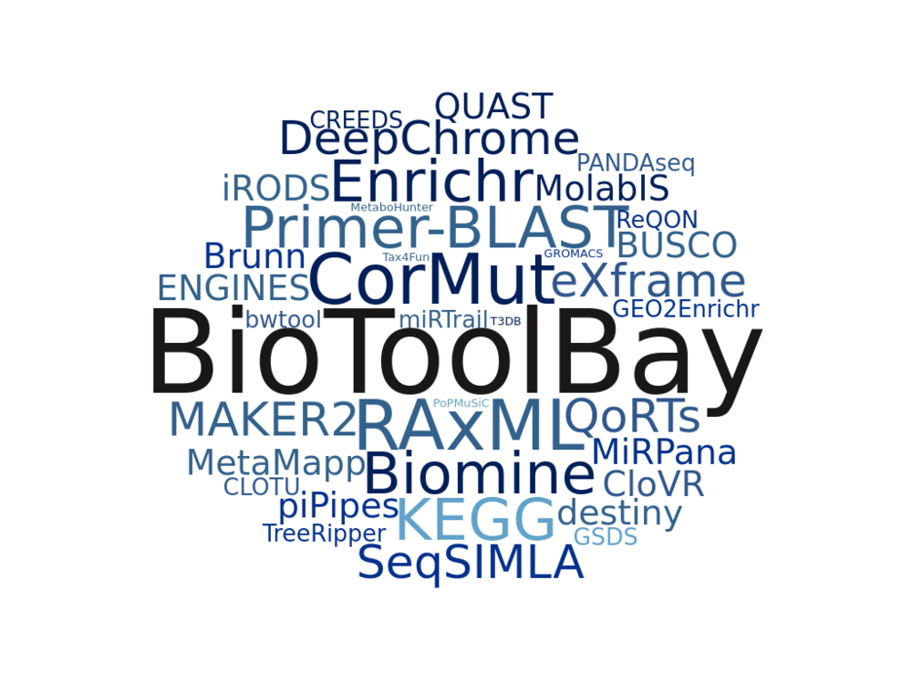

The overarching goal of the project is to build a comprehensive index of softwares, tools, and databases published in several major journals in the field of bioinformatics and computational biology. This data will become an integral part of Datasets2Tools
The results of analysis -recommendation system and data visualization-will be also featured on a small website, BioToolBay which is currently being developed.

Use Scrapy-Splash framework to extract chosen informations from research journals.
| Journal | Extracted Articles | 'Tool's Related Articles' | Unique Tools with Active Link |
|---|---|---|---|
| BMC Bioinformatics | 8,358 | 2,099 | 1,408 |
| NAR Oxford | 20,954 | 3,627 | 2,029 |
| Database Oxford | 742 | 391 | 333 |
| Bioinformatics Oxford | 10,681 | 3,627 | 2,482 |
| Total | 40,735 | 9,744 | 5,915* |
* unique tools across all the journals
Requires Firefox. Color scale represents relative amount of citations. Size of the balls corresponds to relative number of views.